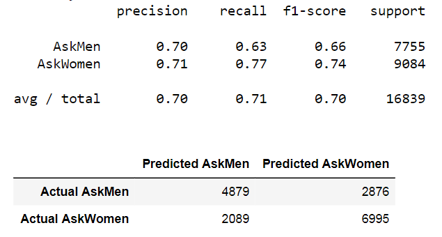
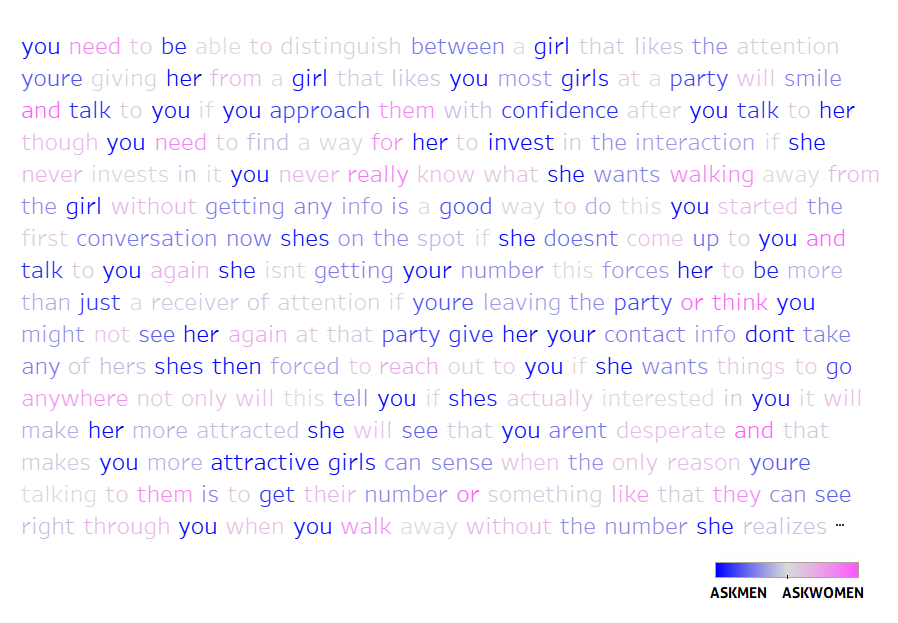

Asking Men and Women
Natural Language Processing, or NLP for short, involves using specialized machine learning techniques to make predictions about the text in a body of documents, including things like authorship attribution, sentiment analysis, text generation, and in some cases the appearance of something resembling semantic understanding.
This is an area in which I have great interest, as I believe it is key to the progression toward more explainable and generalized machine intelligence. It's also an area that has seen dramatic advances in 2018-19, perhaps more than any other domain in machine learning. While some of the new techniques employed in recent months have been fascinatingly powerful, there is considerable value and interest even in fairly straightforward NLP methods, as this project will hopefully demonstrate.
As a writer and something of an armchair linguist, I have an interest in the ways that people formulate their speech. My goal in this project was to collect a large number of Reddit comments and, via a convenient proxy for gender-labeling, try and examine some of the linguistic signatures associated with the male and female gender in their conversations online. Enjoy!
Building the Data Set¶
Import Packages¶
#Standard Packages
import numpy as np
import pandas as pd
import seaborn as sns
import matplotlib.pyplot as plt
%matplotlib inline
#Web Request Package
import requests
How Do We Build a Data Set of Reddit Comments?¶
Reddit, like many websites that produce large amounts of data that people may want to access, has what is called an API (Application Programming Interface). Essentially this is a set of definitions, protocols, and tools that make data available in an accessible format for developers. However, API's will typically have fairly strict limitations about the amount of data one can access, at least without paying a premium.
Reddit's API is convenient in that it stores a lot of useful data and labeling relevant to each comment, user, etc. However, regular users of the API are limited to pulling 1000 comments at a time. This in itself is not really an issue, but Reddit also limits users to only pulling the most recent 1000 comments. This means we would have to wait for some indiscriminate amount of time between each pull, and given the volume of activity on these subreddits, it could be months or even years before we have a powerful dataset.
Luckily, there is an open-source alternative to Reddit's API, called Pushshift API. In addition to providing useful extra features, the Pushshift API has two great advantages:
- We can specify a date and time that we want to start a pull from (i.e.; pull the 1000 comments prior to time t). This allows us to create a loop backward over set intervals of time and pull as much distinct content as we want.
- The data is returned as a list of dictionaries, which allows very easy conversion into Pandas.
Let's access some Reddit comments and see what we get.
#The url given below calls for the most recent 1000 comments from threads on r/AskMen.
url = "https://api.pushshift.io/reddit/search/comment/?subreddit=askmen&sort=des&size=1000"
headers = {'User-agent': 'eamonious'}
res = requests.get(url, headers=headers)
res.status_code
The 200 code indicates that we have successfully accessed the API.
json = res.json()
comments = pd.DataFrame(json['data'])
Let's look at the different data features available to us.
comments.columns
We are interested in the following features:
- body: raw text of the comment
- created_utc: timestamp of the comment
- id: comment unique id
- parent_id: unique id of parent comment (or thread id for first tier comments that reply directly to the thread). Because of the way this category is formatted, we will be able to identify which comments are first tier comments.
- score: how many upvotes the comment has
- subreddit: subreddit that the comment was in. this will be the target variable.
#Removes everything but the features we are interested in.
comments = comments[['body','created_utc','id','parent_id','score','subreddit']]
AskMen and AskWomen: Establishing a Proxy for Gender¶
For this project, we will be focusing on the subreddits r/AskMen and r/AskWomen.
The way these two subreddits work is people make threads in which they ask a question looking for answers from only male or only female redditors, respectively. So, in each subreddit, we can expect the first-tier comments (replying directly to the thread) to be almost exclusively from men or women, respectively: men answering questions in AskMen, and women answering questions in AskWomen. Thus, if we can grab first-tier comments only from each subreddit, we can get a large, balanced dataset of essentially gender-labeled Reddit comments, without any manual tagging.
Accordingly, we want to collect only first-tier comments if possible, and exclude all lower-tier comment replies, which may be from either gender. We can filter for first-tier comments by using the 'parent_id' feature. First tier comments all show the thread id as the parent, which begins with 't3'. Lower-tier comments show the id of the parent comment, which uses a different prefix. All we need to do is exclude anything that doesn't have the 't3' prefix.
#Drops all comments that are not in the first tier, i.e.; direct responses to the original post.
comments['parent_id'] = comments['parent_id'].map(lambda x: x if 't3_' in x else 0)
comments = comments[comments['parent_id']!=0]
Based on experimentation, it looks like the percentage of every 1000 comments that are first tier comments is approximately the same in AskMen and AskWomen (~30-35%), so the classes should remain roughly balanced.
comments.head()
You can see we have the comment text, the timestamp (we'll discuss the format in a minute), the unique id, the parent id (only t3 means only first-tier!), the upvote count, and the subreddit. This is our proof of concept. Now let's go and get some data.
Pulling Comments from Pushshift.io¶
As noted earlier, Reddit limits you to grabbing 1000 comments in a single call, and this rule extends to the Pushshift API as well. To collect more than 1000 comments, and also to reflect a wider variety of timeframes than simply the last few days, we will use the feature in Pushshift that allows you to query based on a timestamp.
We can create a loop that repeatedly collects the 1000 first-tier comments from a subreddit prior to a specified date-time, starting at the present and moving backward at 12 day intervals. I chose 12 days because it will quickly give me a variety of times of year, times of month, days of week, etc., and it is a large enough gap that all comments should be new and my dataset will span at least a full year.
The API uses the epoch timestamp format, a numerical representation. 12 days corresponds to 1036800 units in this format. What I will do is use an initial timestamp from this week and then subtract 1036800 from it in each request, collecting comments further and further back in time and appending them until I have collected 40000+ first-tier comments from the AskMen subreddit. I will then do the same thing for AskWomen.
AskMen Data Grab:
#Creates the initial dataframe
#1000 most recent comments at present time (1545243580), filtered to first-tier only
url = "https://api.pushshift.io/reddit/search/comment/?subreddit=askmen&before=1545243580&sort=des&size=1000"
headers = {'User-agent': 'eamonious'}
res = requests.get(url, headers=headers)
json = res.json()
commentsm = pd.DataFrame(json['data'])
commentsm = commentsm[['body','created_utc','id','parent_id','score','subreddit']]
#Filters for first-tier comments
commentsm['parent_id'] = commentsm['parent_id'].map(lambda x: x if 't3_' in x else 0)
commentsm = commentsm[commentsm['parent_id']!=0]
#Gets rid of mod-removed comments
commentsm = commentsm[commentsm['body']!='[removed]']
#Loops backward over 12 day intervals, adding the 1000 most recent comments prior to each timepoint,
#filtered to first-tier only
for i in range(1,80):
url = "https://api.pushshift.io/reddit/search/comment/?subreddit=askmen&before={}&sort=des&size=1000".format(1545243580 - i*1036800)
headers = {'User-agent': 'eamonious'}
res = requests.get(url, headers=headers)
json = res.json()
commentbloc = pd.DataFrame(json['data'])
commentbloc = commentbloc[['body','created_utc','id','parent_id','score','subreddit']]
commentbloc['parent_id'] = commentbloc['parent_id'].map(lambda x: x if 't3_' in x else 0)
commentbloc = commentbloc[commentbloc['parent_id']!=0]
commentbloc = commentbloc[commentbloc['body']!='[removed]']
commentsm = pd.concat([commentsm, commentbloc], ignore_index=True)
len(commentsm)
AskWomen Data Grab:
url = "https://api.pushshift.io/reddit/search/comment/?subreddit=askwomen&before=1545243580&sort=des&size=1000"
headers = {'User-agent': 'eamonious'}
res = requests.get(url, headers=headers)
json = res.json()
commentsw = pd.DataFrame(json['data'])
commentsw = commentsw[['body','created_utc','id','parent_id','score','subreddit']]
commentsw['parent_id'] = commentsw['parent_id'].map(lambda x: x if 't3_' in x else 0)
commentsw = commentsw[commentsw['parent_id']!=0]
commentsw = commentsw[commentsw['body']!='[removed]']
for i in range(1,80):
url = "https://api.pushshift.io/reddit/search/comment/?subreddit=askwomen&before={}&sort=des&size=1000".format(1545243580 - i*1036800)
headers = {'User-agent': 'eamonious'}
res = requests.get(url, headers=headers)
json = res.json()
commentbloc = pd.DataFrame(json['data'])
commentbloc = commentbloc[['body','created_utc','id','parent_id','score','subreddit']]
commentbloc['parent_id'] = commentbloc['parent_id'].map(lambda x: x if 't3_' in x else 0)
commentbloc = commentbloc[commentbloc['parent_id']!=0]
commentbloc = commentbloc[commentbloc['body']!='[removed]']
commentsw = pd.concat([commentsw, commentbloc], ignore_index=True)
len(commentsw)
Our classes are well balanced, both around 40k comments. We have our data now. But it needs some more work before we can analyze.
Cleaning Away Mod Messages and Deleted Comments¶
First, we want to drop any rows with null values. Second we want to make sure we don't have any duplicate comment IDs. Because of the way we've collected, it's possible we could have some duplicates.
#Remove rows with null values
commentsm.dropna(inplace=True)
commentsw.dropna(inplace=True)
#Remove comments with the same ID
commentsm.drop_duplicates('id',inplace=True)
commentsw.drop_duplicates('id',inplace=True)
We can look at value_counts in the 'body' category (comment text) to look at the most frequently appearing comments with the same text in each subreddit. A number of these will be moderator boilerplate comments, which are specific to each subreddit. We will want to remove these. Also, when comments on reddit are deleted, they are typically replaced by text saying deleted or removed, we will want to get rid of anything like this as well.
We basically look at what comes up in the high frequency comments list, then filter out what we don't want based on identifying language.
#Removing deleted comments and moderator comments from AskMen
commentsm = commentsm[commentsm['body']!='[deleted]']
commentsm = commentsm[commentsm['body']!='\\[removed\]']
commentsm['body'] = commentsm['body'].map(lambda x: 0 if 'has been removed' in x else x)
commentsm['body'] = commentsm['body'].map(lambda x: 0 if 'AskMen' in x else x)
commentsm = commentsm[commentsm['body']!=0]
#Removing deleted comments and moderator comments from AskWomen
commentsw = commentsw[commentsw['body']!='[deleted]']
commentsw['body'] = commentsw['body'].map(lambda x: 0 if 'has been removed' in x else x)
commentsw['body'] = commentsw['body'].map(lambda x: 0 if 'emoved' in str(x)[0:10] else x)
commentsw['body'] = commentsw['body'].map(lambda x: 0 if 'AskWomen' in str(x) else x)
commentsw = commentsw[commentsw['body']!=0]
commentsw = commentsw[commentsw['body']!='Please feel free to respond based on the genders that you find attractive. This question is not limited to women who date men.']
commentsm.shape
commentsw.shape
Our classes are still reasonably well balanced. We had a much larger number of duplicates (~7000) in the AskMen set, which basically suggests that AskMen is somewhat less active. This isn't really surprising. Now we will combine the AskMen and AskWomen comments into a single dataframe.
comments = pd.concat([commentsm, commentsw])
comments = comments.reset_index(drop=True)
comments.head()
Notice that comment with '\r\r\r\r\n...' Those are line breaks, when people put paragraphs in their comments. Let's check and see how many comments have these things in them.
len(comments['body'].map(lambda x: x if '\r' in x else 0).unique())
So 23000+ comments have a \r combo somewhere! This will interfere with our attempt to calculate word length, and may affect our vectorizations and predictions too. If we look through the data further, there are also a large number of multiple spaces in some comments. When we go to calculate word length, we're going to want to use the space character as a splitter. So we need to reduce these to single spaces, or we'll get a bunch of empty spaces counted as words.
So we want to remove all the \r\n combos, and all the multi-spaces, and replace them with one empty space. We can make this type of specific text substitution with regular expressions (regex for short).
#Import Regex
import re
#This function selects any consecutive combination of \r's and \n's in a bloc of text,
#and replaces that selection with a single space.
def replace_linebreaks_w_space(x):
return re.sub('([\r\n]+)',' ',x)
#This function selects any stretch of two or more consecutive spaces in a bloc of text,
#and replaces that selection with a single space.
def replace_multispace_w_space(x):
return re.sub('([ ]{2,})',' ',x)
#Here we take every comment and apply the two functions to it.
comments['body'] = comments['body'].map(replace_linebreaks_w_space)
comments['body'] = comments['body'].map(replace_multispace_w_space)
NOW we can make a column with a proper word length count for each comment!
#Strip away any spaces at the beginning or end of each comment, splits the comment into a list of words,
#and returns the length of that list (i.e.; the number of words in the comment)
comments['word_length'] = comments['body'].map(lambda x: len(x.strip().split(' ')))
comments.head()
We now have accurate word length data. PS. Notice that the \r\r\r\n is gone from that comment!
The last thing we're going to do is remove all comments that are 3 words and shorter, as it's difficult, and for the most part just unreasonable, to guess anything from comments this short. We want to focus on accurately predicting comments that have some content.
comments = comments[comments['word_length']>=4]
len(comments)
comments['subreddit'].value_counts()
Let's save our cleaned dataset!
comments.to_csv('comments_final.csv',index=False)
Building a Model to Predict Gender From Text¶
How do We Represent Language So Computers Can Analyze It?¶
If we want to analyze Reddit comments to make some prediction about them, we need to first find a way to vectorize, or numerically represent, the text of the comments. This is the first concern of natural language processing (NLP). The entire comment collection taken together is referred to as the corpus, from the Latin for body.
One common approach to vectorizing words is called the bag of words representation. In this strategy, we don't care about the relative positions of any of the words in a comment. All we do is break the words into units (tokenization), count how often a given word appears in each comment, and then create a vector for each comment that is just the number of times each word appears, including all the 0s for words that appear somewhere in the corpus, but don't appear in that particular comment.
When we do this, we usually want to exclude words that are extremely common, like "the", "and", etc... these words dominate frequencies, but their influence on the meaning of the text is usually minimal. So it's better to leave them out if we're trying to make accurate predictions. In NLP, these words are called stop words, and there are standard exclusion lists that are built into the available vectorizers as options.
There are a few different vectorizers to choose from: CountVectorizer() and TfidfVectorizer() are the most widely used. CountVectorizer tokenizes and counts, and that's it. TfIdfVectorizer goes a step further, and normalizes the frequencies. Basically, TfidfVectorizer will apply a transformation to our comment vectors that will down-weight the influence of words that appear in a lot of comments, while up-weighting the influence of rarer words. The idea behind this is that common words tend to be less interesting to us; they give us less information about the comment. Rarer words are more likely to have predictive value.
That said, if a word is too rare, and only appears in one or two comments, there isn't much point to including it - what patterns can it really give us? There are parameters that will allow us to only include words in our analysis if they appear in at least n comments.
Single words may be able to help us predict whether a comment is AskMen or AskWomen, but what if we want to consider the frequency of certain pairs of words, or triads? This is where n-grams, or groups of n words, come into play. We can run our model with different combinations of n-grams included and see which performs best. In this case, we found the best performance with a model that included n=1 (individual words), n=2 (pairs), and n=3. Using n-grams gives us at least some characterization of the relative positions of words in each comment. It's no surprise that this improves our ability to predict a comment's origin.
from sklearn.feature_extraction.text import CountVectorizer, TfidfVectorizer
from sklearn.feature_extraction import stop_words
from sklearn.model_selection import train_test_split, GridSearchCV
from sklearn.pipeline import Pipeline
from sklearn.metrics import confusion_matrix, classification_report, accuracy_score
from sklearn.linear_model import LogisticRegression
Logistic Regression: Classification We Can Explain¶
Predicting the subreddit that a comment has come from, or by extension the gender of a comment author, is a classification problem. We want to classify each comment into one of two categories based on the combinations of words it contains.
One of the classic techniques in classification is logistic regression. This name may be confusing, because typically when we talk about regression, we are trying to predict a continuous variable, rather than classifying into categories. The connection is that logistic regression does technically output a continuous variable. But what it outputs is a predicted probability, which represents how likely the model thinks it is that the comment is in a given category.
Logistic regression derives its name from the logistic function, which maps numbers in the range $(-\infty, \infty)$ to the range $(0,1)$. To generate a probability output from a linear combination of features and regression coefficients, logistic regression needs to performs this mapping effect, always returning outputs in the $(0,1)$ range. You may be familiar with the ideas behind linear regression, in which a line is fit to data such that it minimizes the total prediction error across all observations. Logistic regression uses a different optimization method than the least squares technique used in linear regression, but it is similar in that it ultimately relies on optimizing regression coefficients for each feature variable, which makes it similarly very interpretable, and that it seeks to minimize the overall error between its predicted probabilities and the true answers (0 or 1) for each comment.
 I experimented with two other classification techniques as a part of this project, including Naive Bayes and sklearn's Random Forest Classifier. These are entirely different algorithms which I will not discuss further here. Random Forest, in particular, is a decision-tree based technique that tends to be very powerful. However in this case, I found that logistic regression actually returned the highest accuracy scores.
I experimented with two other classification techniques as a part of this project, including Naive Bayes and sklearn's Random Forest Classifier. These are entirely different algorithms which I will not discuss further here. Random Forest, in particular, is a decision-tree based technique that tends to be very powerful. However in this case, I found that logistic regression actually returned the highest accuracy scores.
More importantly though, logistic regression is the best approach for our goals in this project, because it is extremely interpretable, meaning we can clearly characterize the factors (i.e.; the words or n-grams) influencing its final predictions. The other methods I've mentioned are also interpretable to a degree, but less so. This explanatory advantage is why logistic regression remains a very frequently used technique in the world of classification problems.
The last thing we need to know about logistic regression is that it involves regularization. For a thorough explanation of regularization, please see the explanation I have made here. But the short version is that it is an extension of Logistic Regression's loss function that counterbalances the attempt to minimize error by also trying to minimize the scale of the feature coefficients. Sometimes, especially when you have a large number of features like we do here (every word is a feature!), you can over-train to your learning data until you're just training to noise that will be useless for classifying new data. By restricting the size of coefficients, regularization provides resistance against this happening.
Fitting the Best Model¶
We could talk for days about how to build the best performing model, and there are certainly other improvements we could explore. But the core process is GridSearching over hyperparameters. We talked above about some of the different hyperparameter options in language processing. Here are some that we need to consider:
- Should we exclude stop words or not?
- Do we want to just use single words, or should we look at n-grams too?
- How many different comments does a word or n-gram need to appear in, for it to be included as a predictor?
- What type of regularization do we want to use to prevent overfitting?
- How strong do we want our regularization to be?
Basically, the GridSearch function will fit a model a few times each (splitting the data differently each time) across a bunch of different hyperparameter combinations, and select the hyperparameter combination that returns the highest average accuracy score.
In addition, we wanted to try out both vectorizers. The vectorizer function and the LogisticRegression() function both have hyperparameters that we want to test with. What we can do is set up a pipeline, which will let us run one GridSearch across the hyperparameters for both functions. We'll do one pipeline for each vectorizer and see what gives the best result.
#Separate data into comment text (features) and subreddit (target variable)
X = comments['body']
y = comments['subreddit']
#Train test split. Stratify=y guarantees that class balance will be maintained across train and test bloc
X_train, X_test, y_train, y_test = train_test_split(X,y,shuffle=True,stratify=y)
GridSearch: CountVectorizer and Logistic Regression¶
#Creates pipeline to handle vectorization and logistic regression steps
pipe = Pipeline([
('vect', CountVectorizer()),
('model', LogisticRegression())
])
#Specifies different hyperparameter values that we want to test across
params = {
'vect__ngram_range':[(1,3)],
'vect__min_df':[2,5],
'vect__stop_words':[None,'english'],
'model__penalty':['l2','l1'],
'model__C':[0.1, 1, 10],
}
#Executes GridSearch
gs_lr1 = GridSearchCV(pipe, params, cv=4, verbose=3, n_jobs=-1)
gs_lr1.fit(X_train, y_train)
#Training data accuracy score
gs_lr1.score(X_train, y_train)
#Test data accuracy score
gs_lr1.score(X_test, y_test)
#Shows us which hyperparameters were chosen
gs_lr1.best_estimator_.steps
GridSearch: TdidfVectorizer and Logistic Regression¶
pipe2 = Pipeline([
('vect', TfidfVectorizer()),
('model', LogisticRegression())
])
params = {
'vect__ngram_range':[(1,3)],
'vect__min_df':[2,5],
'vect__stop_words':[None,'english'],
'model__penalty':['l2','l1'],
'model__C':[0.1, 1, 10],
}
gs_lr2 = GridSearchCV(pipe2, params, cv=4, verbose=2, n_jobs=-1)
gs_lr2.fit(X_train, y_train)
#Training data score
gs_lr2.score(X_train, y_train)
#Test data score
gs_lr2.score(X_test, y_test)
#Shows which hyperparameters were chosen
gs_lr2.best_estimator_.steps
Model Results¶
The two vectorizers performed comparably, with accuracy around 70.5%. Whenever we attempt a classification problem, we want to keep in mind our baseline accuracy, which depends on the class balance of our target variable. Think of it this way: if we have 1000 comments, and 900 are from women, the model could simply predict that all comments are from women, and it would have a 90% accuracy score. In fact, this is exactly what models will often do in such cases. This is why we try to balance our classes. In this case, we had 36335 AskWomen comments, 31019 AskMen, so the baseline accuracy = 36335/67354, or about 54%. Raising this to 70.5% is a considerable improvement.
In evaluating your model's performance, it's also helpful to think about the reality of the challenge. Predicting gender from text is not trivial. And the majority of these comments are short. What percentage of Reddit comments do we think a human could correctly categorize as male or female, just looking at the text? 70% seems fairly high.
Let's proceed with the TfidfVec model, which has a slight edge in performance. The final model:
- uses Tfidf Vectorization with normalization
- uses Ridge regularization with strength $\alpha$ = 1
- includes n-grams of length 1, 2, and 3
- does not exclude stop words
- includes only words or n-grams that appear in at least 5 comments
One thing that causes some concern is that the training scores are noticeably higher than the test scores, which typically indicates overfitting. This is a bit surprising, because the cross-validation built in to the GridSearch process involves evaluating the model on unseen data. To investigate this, I tried setting a maximum number of features and running the model again. What I found is that if I maxed features at 3000, this effect disappeared, and returned in proportion as I raised the max up again. Still, the model accuracy on the test set marginally improved with the increased features, so I will continue with the model as is.
Confusion Matrix for LogReg with Tfidf¶
A confusion matrix gives us a clearer sense of where our model is performing better or worse. See below.
def fancy_confusion_matrix(y_test, preds):
cmat = confusion_matrix(y_test, preds)
print(f'Accuracy: {accuracy_score(y_test, preds)}')
print(classification_report(y_test, preds))
return pd.DataFrame(cmat, columns=['Predicted ' + str(i) for i in ['AskMen','AskWomen']],\
index=['Actual ' + str(i) for i in ['AskMen','AskWomen']])
predicts = gs_lr2.predict(X_test)
fancy_confusion_matrix(y_test, predicts)

As you can see above, when the model makes a prediction, the precision of that prediction, i.e.; the percentage of times the prediction is correct, is about the same, regardless of what was predicted (~70-71%). However, the recall, or sensitivity, varies significantly between the genders. The model has a harder time detecting that an AskMen comment comes from AskMen (63%) than it does detecting that an AskWomen comment comes from AskWomen (77%). Basically, this suggests that the word or n-gram signature of female comments is a bit more distinctive.
NOW FOR THE FUN STUFF...¶
Identifying the Most Gender-Predictive Words and Phrases¶
The first thing we can do is look at the regression coefficients for every word or n-gram, sorted negative to positive. In this model, we have assigned AskMen comments to 0 and AskWomen comments to 1. So the words or n-grams with the strongest positive coefficients in our model are the words or n-grams that are most predictive of female authorship (they push the outcome towards 1 the most). And the words or n-grams with the strongest negative coefficients are the most predictive of male authorship (they push the outcome toward 0). This is how we can identify the words and n-grams that point towards a gender. And REMEMBER - the words with the most influential coefficients one way or the other don't just represent the words that are most likely to appear in comments by a given gender. They also have to be unlikely to appear in comments made by the other gender. This is a binary classification problem, after all. In short, the model is looking for words and n-grams that are highly frequent in one subreddit RELATIVE TO THE OTHER.
By sorting the resulting coefficients and looking at the 200 words and n-grams that are most predictive of each gender's authorship, we will see that obvious gender-oriented and subject-oriented keywords and phrases are predominant. But we can also begin to notice subtler linguistic trends, which I have summarized in the presentation slides.
coefs = pd.DataFrame(gs_lr2.best_estimator_.steps[1][1].coef_).T
coefs.columns = ['coef']
coefs['ngram'] = gs_lr2.best_estimator_.steps[0][1].get_feature_names()
coefs = coefs[['ngram','coef']]
coefs = coefs.sort_values('coef')
coefs.to_csv('./csvs/coef_ranks.csv',index=False)
#Shows words and n-grams most strongly associated with comments by men
coefs.head(15)
len(coefs)
We have over 400,000 different words and n-grams in our feature list! Let's take the 200 most predictive words/n-grams for each gender (top .0005) and make word clouds to visualize them.
Gender-Predictive Word Clouds¶
from wordcloud import WordCloud
AskMenWordCloud = coefs[0:200]
AskWomenWordCloud = coefs.sort_values('coef',ascending=False)[0:200]
#How to create a wordcloud:
d={}
for key, val in AskMenWordCloud.values:
d[key] = int(val**2)
wordcloud = WordCloud(width = 2000, height = 2000,
background_color ='white',
min_font_size = 10).generate_from_frequencies(d)
plt.figure(figsize = (20, 20), facecolor = None)
plt.imshow(wordcloud)
plt.axis("off")
plt.tight_layout(pad = 0)
plt.show()
Identifying the Most Gender-Linked Comments¶
Each comment in our data set has a predicted probability of being male or female-authored attached to it. So another interesting thing we can do is sort by these predicted probabilities to identify the comments that the model identifies as the most obviously male or most obviously female. Let's take a look at some of the top results:
#Puts predicted probabilities and associated text into a dataframe
predictions = pd.DataFrame(gs_lr2.predict_proba(X))
predictions['text'] = comments['body']
#Shows the top AskMen predicted comments
predictions.sort_values(1)[0:25]
Data Set String Search¶
Here I built out a quick function to return any comment in my dataset containing a given word or phrase. This helped me to review full comments of interest after looking at the predict_proba dataframe display. Could be a useful tool in other contexts as well.
def print_comment_if_string(string,comment):
if string.lower() in comment.lower():
print(comment)
print('-----')
#Just change the string and run the loop to search for comments
for i in comments['body']:
print_comment_if_string('let her deal',i)
Where Does the Model Get it Wrong?¶
Now let's look at comments where the true answer does not match the model's prediction. Because we have predicted probabilities, we can see exactly how sure the model was about its wrong predictions. Mostly we would expect that the predicted probabilities would be closer to 0.5/0.5 for wrong answers, but by looking at where the model is highly certain about an incorrect answer, we can learn something about our model.
predictions = pd.DataFrame(gs_lr2.predict_proba(X))
predictions['text'] = comments['body']
predictions['true'] = comments['subreddit']
predictions['pred'] = gs_lr2.predict(X)
predictions.columns = ['AskMen','AskWomen','text','true','pred']
predictions = predictions[['text','true','pred','AskMen','AskWomen']]
#Let's look at comments where the model guessed wrong.
wrong = predictions[predictions['true']!=predictions['pred']]
#Predicts AskMen strongly when the answer is AskWomen
wrong.sort_values('AskMen',ascending=False).head(10)
#Predicts AskWomen strongly when the answer is AskMen
wrong.sort_values('AskWomen',ascending=False)[31:40]
Heatmapping Text by Gender-Association in Tableau¶
Sometimes, in looking at comments that have received very strong gender predictions from the model, one is left wondering what the model is seeing. The maleness or femaleness of such a comment is usually pretty self-evident, so we have faith that the model is basing its decision on more than just noise. Wouldn't it be great if we could take a comment like this, and visualize what the model is identifying as male or female, just by a glance at the text?
from nltk.tokenize import RegexpTokenizer
coefs = pd.read_csv('./csvs/coef_ranks.csv')
#Copy comment string in here, insert \ before apostrophes
comment = 'You need to be able to distinguish between a girl that likes the attention youre giving her from a girl that likes you. Most girls at a party will smile and talk to you if you approach them with confidence. After you talk to her though, you need to find a way for her to invest in the interaction. If she never invests in it you never really know what she wants. Walking away from the girl without getting any info is a good way to do this. You started the first conversation, now shes on the spot. If she doesnt come up to you and talk to you again, she isnt getting your number. This forces her to be more than just a receiver of attention. If youre leaving the party, or think you might not see her again at that party. Give her your contact info, dont take any of hers. Shes then forced to reach out to you if she wants things to go anywhere. Not only will this tell you if shes actually interested in you, it will make her more attracted. She will see that you arent desperate, and that makes you more attractive. Girls can sense when the only reason youre talking to them is to get their number or something like that. They can see right through you. When you walk away without the number, she realizes youre not just trying to get her number, you actually just wanted to talk to her. That is attractive'
#Converts comment to list of lowercase tokens
tokenizer = RegexpTokenizer(r'\w+')
comment_tokens = tokenizer.tokenize(comment.lower())
#Creates dataframe with words from comment, in order, with their coefficients
coef_list = []
for i in range(len(comment_tokens)):
gram = comment_tokens[i]
try:
coef = coefs[coefs['ngram']==gram]['coef'].values[0]
except:
coef = np.nan
coef_list.append(coef)
d = {'gram':comment_tokens,'coef':coef_list}
df = pd.DataFrame(d).fillna(0)
df.to_csv('./csvs/tableau_data.csv')
We can use this in Tableau to create a divergent-color text heatmap of the comment. We use the ngram column as a dimension on text, and the coefficient column as a measure on color.

Conclusions and Limitations¶
Additional Directions¶
I tried looking at longer comments only (word length > 20), to see how this affected performance. About 45000 comments met criteria, and classes remained balanced. After a full GridSearch, the final model had an accuracy score close to 73%, a moderate but definitive improvement. This isn't surprising, as the shortest comments should be among the hardest to classify. But it was interesting to see this confirmed, because it suggests that longer text documents may be gender-identifiable with even higher accuracy, at least up to some plateau.
I also tried predicting whether a comment had over or under 10 upvotes, as a binary classification problem, based on the words and n-grams in the comment. This was interesting in the sense that it might show words to avoid or words to include to try and get upvotes when commenting in one subreddit or the other. Only about 15% of comments have 10 or more upvotes, so there was a class balance problem. Bootstrapping up resulted in heavily overfit data, to the point of meaninglessness. Downsampling regular comments introduced significant bias, reducing me to data sets of about 9000 comments.
I did see some success with this. In AskMen, I could only really raise accuracy from 50% to around 54%. But in AskWomen, I was able to raise accuracy over 60%, and the confusion matrix and sensitivity scores looked very reasonable. Still, I felt that the top coefficient factors were rarely plausible, often dominated by stop words. My ultimate takeaway was that this was largely grasping at straws, which makes sense - most of upvote score is down to high-level context, not individual words. I did see modest improvement when I added a gap, and looked at 10+ upvote comments against comments with 1 or fewer upvotes. This suggests to me that it might be worth going back and attacking the question with regression, using upvotes as a continuous target variable, and preferably with a substantially larger data set.
Limitations of First-Tier Comments in AskMen and AskWomen as a Proxy for Gender.¶
Of course, there will be cross-over between the subreddits to a minor degree, with the occasional man responding to an AskWomen question, and vice versa, so a small percentage of our labels will be incorrect. But there are other limitations to our model.
Some of the major shortcomings of the model are the result of bias toward the majority and stereotyping. Homosexuality is one example. Gay men writing about "my husband", "my boyfriend", will be classed as female authors, often with very high certainty. Women who talk about riding a motorcycle, or who swear aggressively, etc etc, will be classed as male authors. These examples speak to very valid ethical concerns. Natural language models trained on large corpora often struggle to avoid biases like these. We need to be careful about the ways in which we employ models that may reinforce stereotyped perceptions and behaviors.
The nature of the subreddits themselves can actually create flaws in our gender proxy. To illustrate this, consider the 3-gram "I'm a girl" or "I'm a woman". You might think this would be a slam dunk for the model, but in fact, this phrase is much more likely to be said by someone (a woman) replying to a question in AskMen. So the model see's "I'm a girl" and correctly predicts AskMen, and because we're using AskMen as a proxy for gender, "I'm a girl" ends up ranking among the factors that we name as indicating male authorship. In this case, the mistake is obvious, but there may be other mistakes created by the pretenses of the subreddits that are harder to spot.
I suspect the largest issue is that the subject matter discussed in these subreddits, which is probably often gender-specific, makes the task a bit easier for the model than if we just had a bunch of gender-labeled comments talking about anything and everything. It also probably throws off what the true most predictive words and ngrams are, because it's more likely that women, for instance, are using the word bra, or husband, or cramps, in this context than in general discussion in other subreddits. I'd be curious to see how the model performs on a gender-labeled data set of comments from all across Reddit, especially to see which word and ngram features maintain or strengthen their influence.
Final Thoughts¶
In spite of these limitations, the model definitely brings value. There were certainly examples, in looking at comments where the model had predicted gender "incorrectly," where the author was in fact a woman posting in AskMen, or a man posting in AskWomen, flagged by the model based on its learning. It's fair to say that the prevalence of gender-oriented subject matter in these subreddits gave the model extra firepower. But a surprisingly large number of its leading gender predictors were low-level linguistic signatures that we would expect to be pretty much unconscious. So I think there is something to the idea that men and women tend towards identifiable linguistic and grammatical patterns in their online writing, and I expect that a model trained over a larger corpus and with creative improvements could be quite effective at attributing authorship by gender, even in these short-form mediums. What the application of such a model would be, and the ethical concerns around its usage, is another discussion worth having.